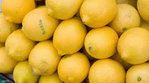
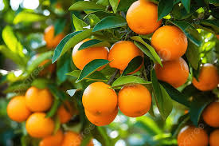
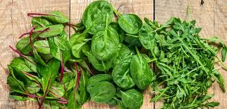
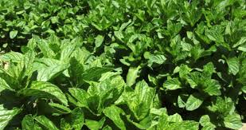
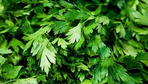

ليمون

الليمون لدينا مليء بالعصارة وناضج، ومثالي للسلطات والعصائر وغيرها. يتم توفيره من المزارع المحلية لضمان النضارة.
في حصاد، نقدم مجموعة متنوعة من المنتجات الزراعية الطازجة التي يتم الحصول عليها مباشرة من المزارعين المحليين. تشمل مجموعة منتجاتنا:
طماطم، خيار، فلفل، وغيرها
تفاح، برتقال، توت، وغيرها من الخيرات الموسمية
ريحان، نعناع، سبانخ، وغيرها
منتجات فريدة ويصعب العثور عليها بناءً على الموسم
يتم اختيار جميع منتجاتنا بعناية لضمان أعلى مستويات الجودة والنضارة. نحن نعمل عن كثب مع المزارعين المحليين لنقدم لكم أفضل المنتجات الموسمية بأسعار تنافسية.

الليمون لدينا مليء بالعصارة وناضج، ومثالي للسلطات والعصائر وغيرها. يتم توفيره من المزارع المحلية لضمان النضارة.

البرتقال لدينا حلو ومليء بالعصارة، ومثالي للأكل المباشر أو العصر. يتم توفيره من المزارع المحلية لضمان النضارة.

السبانخ لدينا طازجة وطرية، ومثالية للسلطات والعصائر الصحية. يتم توفيرها من المزارع المحلية لضمان النضارة.

النعناع لدينا طازج وعطري، ومثالي للإضافة إلى الشاي والسلطات وغيرها. يتم توفيره من المزارع المحلية لضمان النضارة.

البقدونس لدينا طازج وحيوي، ومثالي للإضافة إلى السلطات والحساء وغيرها. يتم توفيره من المزارع المحلية لضمان النضارة.